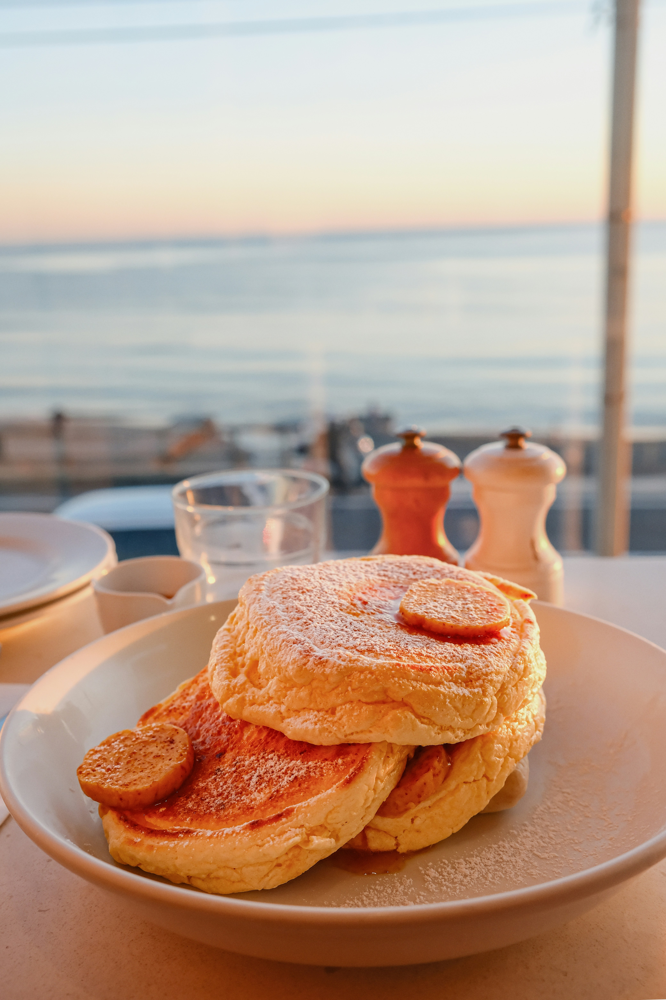

Japanese souffle pancakes are like regular pancakes but fluffier and twice the height! These thicker pancakes are not only enticing, but charming and elegant too. Whether it's for a special breakfast in bed type situation, or a day to indulge on something a little more exciting for yourself, these souffle pancakes will make your day! You will need round pancake molds for this one!
Combine milk and vinegar in a bowl. Let sit until milk is soured. About 5 minutes.
While you are waiting, sift flour, sugar, and baking powder together in a seperate bowl. Set aside.
Place egg whites into a mixing bowl. Beat until frothy and stiff peaks form. It's recommended you use an electric mixer for this, but you can do it the hard way by hand with a whisk if you don't have that option.
Add egg yolks and vanilla extract to your milk and vinegar mixture. Mix until combined then pour into your flour mixture. Whisk until combined. Add mayonnaise and stir until smooth and there are no lumps. Fold in your egg whites.
Heat pan on stove top to medium-low heat. Melt butter in pan. Grease your pancake molds and place them in your pan. Fill them halfway with your pancake batter. Cook them until the bottom is golden brown and the top is more solid. Flip the pancake with the mold and cook until that side is golden brown and the pancakes have doubled in thickness. 4-6 minutes per side.
Take off the mold and your pancake is ready to serve! Pairs well with maple syrup, fruit, and whipped cream!